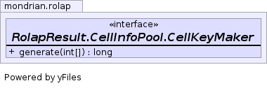

static interface RolapResult.CellInfoPool.CellKeyMaker
long.
Generates a long ordinal based upon the values of the integers stored in the cell position array. With this mechanism, the Cell information can be stored using a long key (rather than the array integer of positions) thus saving memory. The trick is to use a 'large number' per axis in order to convert from position array to long key where the 'large number' is greater than the number of members in the axis. The largest 'long' is java.lang.Long.MAX_VALUE which is 9,223,372,036,854,776,000. The product of the maximum number of members per axis must be less than this maximum 'long' value (otherwise one gets hashing collisions).
For a single axis, the maximum number of members is equal to the max 'long' number, 9,223,372,036,854,776,000.
For two axes, the maximum number of members is the square root of the max 'long' number, 9,223,372,036,854,776,000, which is slightly bigger than 2,147,483,647 (which is the maximum integer).
For three axes, the maximum number of members per axis is the cube root of the max 'long' which is about 2,000,000.
For four axes the forth root is about 50,000.
For five or more axes, the maximum number of members per axis based upon the root of the maximum 'long' number, start getting too small to guarantee that it will be smaller than the number of members on a given axis and so we must resort to the Map-base Cell container.

| Modifier and Type | Method and Description |
|---|---|
long |
generate(int[] pos) |
long generate(int[] pos)